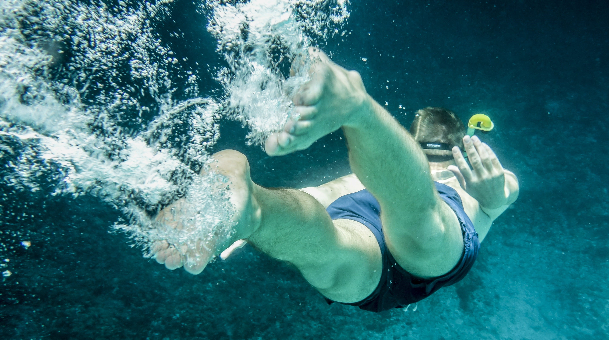
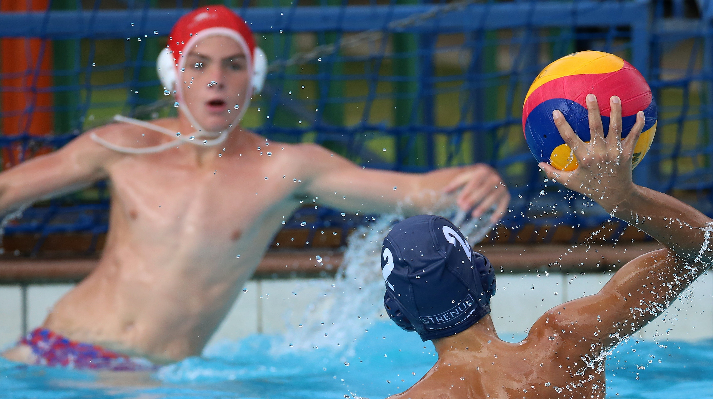

Deportes Acuáticos
Buceo

El buceo es una fascinante actividad acuática que sumerge a los entusiastas
en un mundo totalmente diferente, donde la gravedad parece desvanecerse y
la vida marina cobra vida en su esplendor. Al sumergirse en las
profundidades del océano, los buceadores experimentan la sensación única
de flotar en la inmensidad azul, explorando arrecifes de coral vibrantes,
misteriosos naufragios y una diversidad de criaturas marinas. Más allá de ser
un deporte, el buceo es una puerta de entrada a la comprensión y
apreciación del ecosistema submarino, al tiempo que ofrece a los
aventureros una conexión directa con la belleza y la serenidad de los
océanos. Descubrir el mundo subacuático a través del buceo es embarcarse
en una emocionante odisea que despierta los sentidos y crea memorias
inolvidables.
NATACIÓN SINCRONIZADA

La natación sincronizada, con su elegancia y gracia, fusiona la destreza
acuática con la expresión artística. En esta disciplina, los nadadores realizan
movimientos sincronizados al ritmo de la música, creando una impresionante
coreografía acuática. Este deporte acuático no solo exige fuerza y resistencia
física, sino también una coordinación excepcional y un sentido agudo del
tiempo. Los equipos de natación sincronizada combinan la destreza técnica
con la creatividad, sumergiéndose en un mundo donde el agua se convierte
en un lienzo para expresar la armonía y la belleza. La natación sincronizada
no solo celebra la habilidad atlética, sino que también encapsula la capacidad
de transformar el agua en un escenario artístico que cautiva a quienes lo
presencian.
SURF

Al deslizarse sobre las olas, los surfistas experimentan una simbiosis única
con el poder del mar, buscando el equilibrio perfecto entre destreza atlética y
armonía con las fuerzas naturales. Cada ola es una nueva oportunidad para
desafiar los límites y encontrar la emoción de cabalgar sobre la cresta del
agua. El surf va más allá de ser simplemente un deporte; es una forma de
vida que celebra la aventura, la camaradería y la búsqueda constante de la
próxima ola perfecta. En este mundo acuático, los surfistas encuentran no
solo una pasión, sino también un vínculo innegable con la vastedad del
océano y la libertad sin límites que ofrece.
WATERPOLO

El waterpolo, un deporte acuático dinámico y estratégico, combina la
velocidad y la fuerza con la habilidad táctica en el medio acuático. Disputado
en una piscina, los equipos luchan por controlar la pelota y marcar goles
mientras nadan vigorosamente. La intensidad del waterpolo exige resistencia
física, destreza en la natación y una comprensión profunda de las estrategias
del juego. Este deporte, a menudo comparado con el ajedrez acuático,
requiere no solo habilidades individuales, sino también una comunicación
fluida y una coordinación perfecta entre los jugadores. Más allá de la
competencia, el waterpolo fomenta el compañerismo y el trabajo en equipo,
creando una comunidad apasionada de atletas que comparten la emoción de
desafiar las aguas para alcanzar la victoria.